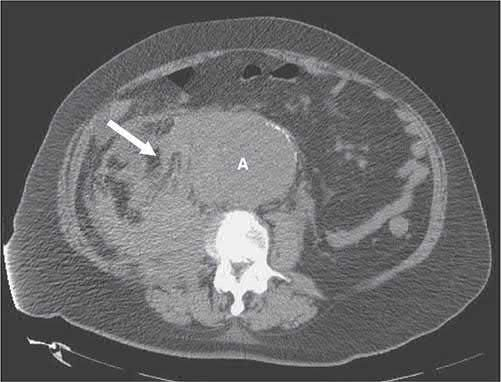
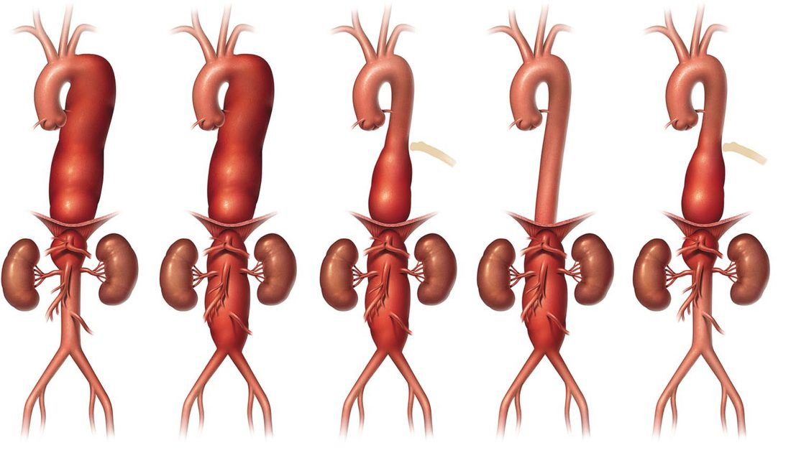
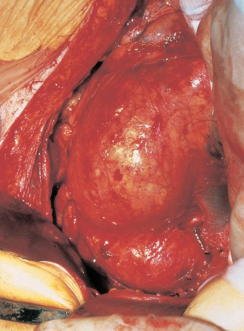
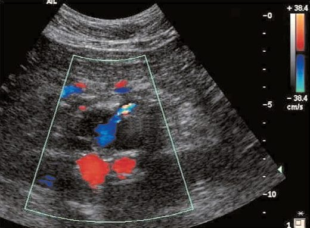

Aortic Aneurysm
Summary
- An aneurysm is an abnormal localised dilatation of a blood vessel, most commonly affecting the infrarenal abdominal aorta, and is associated with structural abnormalities of collagen and elastin in the vessel wall [1].
- Abdominal aortic aneurysm (AAA) is the most common large-vessel aneurysm, found in 2% of the population at autopsy, and is usually asymptomatic until rupture, which carries a mortality of 75–95% [1][2].
- Screening, surveillance, and elective repair (open or endovascular) once a threshold diameter is reached form the basis of management, while rupture is a surgical emergency requiring immediate transfer to theatre [2].
Definition
- An AAA is a pathologic focal dilatation of the aorta that is >30 mm, or 1.5 times the adjacent normal aortic diameter [3].
- True aneurysms contain all three layers of the artery wall and may be fusiform (symmetrical dilatation) or saccular; false aneurysms do not contain all three layers and are lined by surrounding connective tissue/adventitia, usually secondary to penetrating trauma including iatrogenic injury [1].
- Aortic dissection is a distinct entity from aneurysm, arising from disruption of the intima and media, presenting acutely with tearing pain, and is classified separately from aneurysmal disease [1][4].
Pathophysiology
- Ninety-five per cent of AAAs are associated with atheromatous degeneration and occur below the renal arteries [2].
- The most common cause of AAA is atherosclerosis, which results in degeneration of the medial layer of the aortic wall [5].
- Predisposing mechanisms for aortic dissection include hypertension, connective tissue disorders, vascular inflammation, and disruption of the intima and media (e.g., penetrating aortic ulcer and intramural haematoma); dissection occurs within the medial layer of the vessel wall [4][6].
- Genetic syndromes associated with aortic dissection and aneurysm include Marfan syndrome (FBN1 mutation) and Loeys-Dietz syndrome (TGFB1, TGFBR2, TGFB mutations), as well as less common genes MYH11, ACTA2 and SMAD3 [4].
- Inflammatory aneurysms (5–10% of AAAs) show gross connective tissue changes around the aortic wall in the retroperitoneum and are not secondary to infection but a distinct inflammatory process that resolves after aortic graft placement [1][5].
- Mycotic aneurysms arise when bacteria (Staphylococcus most common, then Salmonella) infect an atherosclerotic plaque, causing aneurysmal degeneration and a high rupture rate [1][5].
Clinical features
- Most AAAs are asymptomatic and detected incidentally on clinical examination, ultrasound, abdominal X-ray or CT [1].
- Symptomatic aneurysms may cause minor back and abdominal discomfort before sudden, severe pain develops with expansion or rupture; rarely, symptoms arise from erosion or compression of surrounding structures, e.g. aortoenteric fistula or ureteric obstruction [2].
- About 3% of aneurysms are painful because of inflammation of the aneurysm itself, and pain may signal imminent rupture, warranting urgent surgery [2].
- Ruptured AAA classically presents with the triad of severe abdominal and/or back pain, hypotension, and a pulsatile abdominal mass; pain typically begins centrally and radiates to the back, or along the genitofemoral nerve to the groin [2][7].
- Cullen's sign and Grey Turner's sign (periumbilical and flank bruising respectively) are late indicators, appearing 3–4 days after a long-standing rupture [7].
- A clear separation between the upper end of a palpable aneurysm and the costal margin suggests an infrarenal origin, and additional iliac fossa pulsatile masses suggest associated iliac aneurysms; dilated popliteal arteries strengthen the suspicion of AAA [7].
- Large amounts of free intraperitoneal blood, obesity, guarding and hypotension may render a leaking aneurysm impalpable [7].
- Ascending thoracic aortic aneurysms are often asymptomatic and picked up on routine chest X-ray, but can cause vertebral compression (back pain), recurrent laryngeal nerve compression (voice changes/Ortner syndrome), bronchial compression (dyspnoea/pneumonia), or oesophageal compression (dysphagia) [4][6].
- Aortic dissection presents with tearing chest pain, may mimic myocardial infarction, and can show unequal pulses or blood pressures in the upper extremities; 95% of patients have severe hypertension at presentation [6].
- Absence of the brachial or femoral pulse suggests a dissecting aneurysm, especially when pain began in the chest [7].
Etiology
- Risk factors for AAA development include tobacco use, hypercholesterolaemia, hypertension, male sex, family history (male predominance), age, concurrent aneurysms and height, while female sex, Black race and diabetes appear protective against development [4].
- Risk factors for AAA expansion include advanced age, severe cardiac disease, previous stroke, tobacco use, and cardiac or renal transplantation; risk factors for rupture include female sex, reduced FEV1, larger initial diameter, higher mean blood pressure, and current tobacco use [4].
- Prevalence of AAA is 4% of men aged 65, increasing with age, with a male-to-female ratio of roughly 5:1 (4:1 by screening data), and 90% are infrarenal [1][3].
- Fifteen per cent of AAAs extend to involve the common iliac origins ('aortoiliac') [1].
- Concomitant common iliac and/or hypogastric artery aneurysms occur in 20–25% of patients, and there is a higher predilection for juxtarenal and suprarenal AAAs in women than men [3].
- Thoracoabdominal aneurysm risk factors and associations mirror generalised atherosclerosis; patients with abdominal aortic aneurysms are invariably current or former smokers and may have a family history of atherosclerotic aneurysms [7].
Diagnosis
- Ultrasonography is the standard screening and surveillance tool for AAA, the UK national screening programme offers a single scan to men in their 65th year [2].
- CT scanning (with three-dimensional reconstruction) is the best modality to assess aneurysm morphology for planning intervention; the aneurysm sac often contains circumferential thrombus, which produces a falsely narrowed appearance on digital subtraction angiography, so DSA should not be used to assess aneurysm size [2].
- Preoperative work-up includes full blood count, electrolytes, liver function tests, coagulation and lipid studies, cross-matched blood, ECG, chest radiograph, and, where indicated, echocardiography, cardiopulmonary exercise testing and spirometry [2].
- For ruptured AAA, diagnosis is clinical (pain, hypotension, pulsatile mass); if the patient is stable and the diagnosis uncertain, contrast CT confirms rupture and assesses suitability for EVAR, CT shows retroperitoneal fluid and extraluminal contrast [1][5].
- Rupture is most likely from the left posterolateral wall, 2–4 cm below the renal arteries [5].
- For aortic dissection, CT with contrast is the diagnostic test of choice; chest X-ray is often normal but may show a widened mediastinum [6].
- CT and MRI both achieve sensitivities and specificities up to 100% for dissection; transoesophageal echocardiography is more sensitive (98%) and specific (63–96%) than transthoracic echocardiography for thoracic aortic dissection [4].
- Before widespread CT availability, aortic dissection was diagnosed at autopsy in >25% of affected patients [4].
- Absent or differential pulses, considered a pathognomonic sign of dissection, are present in only a minority of patients (139/526 in one series), and over 25% of dissection patients show ECG changes of myocardial ischaemia/infarction, risking misdiagnosis as acute coronary syndrome [4].

Scoring and Severity
- The Crawford classification (extents I–V) grades thoracoabdominal aortic aneurysms by the extent of thoracic/abdominal aortic involvement and guides management in specialist centres [1][4].
- Aortic dissection is classified by the DeBakey system, type I (entire ascending aorta, arch, and descending aorta), type II (ascending aorta only), and type III (descending aorta only, with IIIa confined above and IIIb extending below the diaphragm) (and by the Stanford system) type A (any ascending aortic involvement, generally surgical) and type B (distal to the left subclavian artery, generally managed medically/endovascularly) [4][6].
- Dissections are further staged by time from onset: hyperacute (<24 hours), acute (2–7 days), subacute (8–30 days) and chronic (>30 days), with the classical acute/chronic cut-off at 2 weeks [4].
- Endoleaks after EVAR are classified types I–V by failure site: type I (proximal/distal attachment site), type II (retrograde collateral flow, e.g. lumbar or IMA vessels), type III (junction between graft components or fabric tear), type IV (graft wall porosity), and type V/endotension (aneurysm expansion without a demonstrable leak) [5].
- Risk of AAA rupture rises with diameter: <0.5%/year at <4.0 cm, 1%/year at 4–5.5 cm, and >3%/year at >5.5 cm [1]; similarly, annual rupture risk is quoted as ≤1% below 55 mm, 5–10% at 55–60 mm, and ~25% at ≥70 mm [2].

Treatment and Management
- Asymptomatic AAA in a fit patient should be considered for repair once the diameter exceeds 55 mm (measured anteroposteriorly by ultrasound), balancing the roughly 5% mortality of elective open surgery against rupture risk; regular ultrasound surveillance is used below this threshold [2].
- Surveillance intervals by size are: 3.0–3.9 cm every 3 years, 4.0–4.9 cm yearly, and >5.0 cm every 6 months [5].
- Repair is also indicated for growth >0.5 cm in 6 months (or >1.0 cm/year), symptomatic aneurysms, and infected (mycotic) aneurysms, with a lower threshold (≥5.0 cm) in women or high-risk patients (severe COPD, strong family history of rupture, poorly controlled hypertension, eccentric shape) [1][5].
- Guideline recommendations differ: NICE (UK, 2020) recommends open repair as first line unless contraindicated, reserving EVAR for high-risk patients or a hostile abdomen, whereas European Society for Vascular Surgery 2019 guidelines favour EVAR as first line, with open repair for patients with long life expectancy [2].
- EVAR is associated with reduced early mortality compared with open repair but has a higher reintervention rate, requires lifelong imaging surveillance, and has shown no long-term survival advantage [1][2].
- About 75% (or ~60% by other estimates) of infrarenal aneurysms are anatomically suitable for EVAR; unsuitability is caused by a short, flared or angulated neck or difficult iliac access [2][3].
- Ideal AAA morphology for EVAR includes neck length >10–20 mm, neck diameter <32 mm, neck angulation <60 degrees, common iliac length >10 mm and diameter 7–18 mm, and non-tortuous, non-calcified iliac arteries [3][5].
- For ruptured AAA, management is emergency: permissive hypotension (systolic <100 mmHg, or SBP 80–100), two large-bore IV cannulae, urinary catheter, cross-matched blood, high-flow oxygen, analgesia, and immediate transfer to theatre, "the treatment of ruptured aneurysm is an operation, not monitoring and resuscitation" [1][2].
- EVAR should be considered first-line for anatomically suitable ruptured AAA (REVAR) [2].
- Indications for ascending aortic aneurysm repair include acute symptoms, diameter ≥5.5 cm (≥5.0 cm in Marfan syndrome), or rapid growth >0.5 cm/year; descending/thoracoabdominal aneurysms are repaired at >5.5 cm if endovascular repair is feasible or >6.5 cm if open repair is required [6].
- All ascending aortic dissections (Stanford A) require open surgical repair; descending dissections (Stanford B) are managed operatively only if there is visceral/extremity malperfusion or contained rupture, otherwise medically with IV beta-blockade (e.g. esmolol) and nitroprusside to control blood pressure [6].
Surgeries
- Open AAA repair uses a full-length midline or supraumbilical transverse incision; the aorta is exposed just below the renal arteries, clamps are applied proximally and distally, and an inlay synthetic (Dacron/PTFE) tube or bifurcated ('trouser') graft is sutured within the opened aneurysm sac, which is then closed over the graft to separate it from the bowel [1][2].
- A straight tube Dacron graft is typically used; if performing aorto-bifemoral repair, flow to at least one internal iliac (hypogastric) artery must be preserved (with visible back-bleeding) to avoid vasculogenic impotence and buttock claudication, reimplanting the internal iliac if necessary [5].
- The inferior mesenteric artery is reimplanted if back-pressure is <40 mmHg, if there has been previous colonic surgery (disrupting collaterals such as the Arc of Riolan or Marginal Artery of Drummond), if there is SMA stenosis, or if left colon perfusion looks inadequate [5].
- Emergency proximal aortic control for rupture is obtained by compressing the aorta against the spine through the gastrohepatic ligament (supraceliac aorta beneath the diaphragmatic crus), dividing the crus further if needed [5].
- EVAR uses a modular stent-graft (main body plus limbs, made of Dacron/PTFE with metallic stents) deployed via bilateral femoral access under fluoroscopic guidance, anchored by hooks/barbs with infrarenal or suprarenal fixation, requiring lifelong duplex/CT surveillance for endoleak, disconnection or migration [2].
- For mycotic aneurysms and infected aortic grafts, an extra-anatomic bypass (axillo-bifemoral with femoral-to-femoral crossover) is performed first, followed by resection of the infected infrarenal aorta/graft and oversewing of the aortic stump [5].
- Aortoenteric fistula, where a graft erodes into the third or fourth part of the duodenum near the proximal suture line, is treated the same way: bypass through a non-contaminated field, graft resection, and closure of the duodenal defect [5].
- Repair of descending thoracic/thoracoabdominal aneurysms carries a risk of paraplegia from spinal cord ischaemia (occlusion of intercostal arteries and the artery of Adamkiewicz), reduced by lumbar CSF drainage, maintaining spinal perfusion pressure (MAP minus spinal pressure) with vasopressors, and reimplanting intercostal arteries below T8; paraplegia risk is <5% with endovascular repair versus about 20% with open repair [6].

Complications
- Postoperative complications after open AAA repair are most commonly cardiac (ischaemia, infarction, the leading cause of acute death after surgery) and respiratory (atelectasis, lower lobe consolidation); colonic ischaemia occurs in about 10% of patients (usually self-limiting) due to loss of IMA collateral supply, and acute kidney injury (the leading cause of late death) is more likely with preoperative renal impairment or ruptured presentations [2][5].
- Ischaemic colitis after AAA repair presents with (often bloody) diarrhoea; the middle and distal rectum are spared because of internal iliac collateral supply, and diagnosis is by lower endoscopy (best test) or CT, with colectomy and colostomy required if there is diffuse peritonitis, sepsis, or black/necrotic mucosa [5].
- Elective AAA repair carries about 3–7% (Oxford Handbook) or 5% (ABSITE Review) operative mortality; a third of patients experience impotence secondary to disruption of autonomic nerves and pelvic blood flow [1][5].
- Major vein injury (retro-aortic left renal vein) can occur with proximal cross-clamping [5].
- Graft infection occurs in about 1% of cases (Staphylococcus epidermidis most common), and pseudoaneurysm formation after graft placement occurs in about 1%; atherosclerotic graft limb occlusion is the most common late complication [5].
- Aortoenteric fistula typically presents more than 6 months after surgery with a herald bleed (haematemesis, then melaena/haematochezia, then exsanguination) [5].
- Risk factors for perioperative mortality include creatinine >1.8 (the leading factor), congestive heart failure, ECG evidence of ischaemia, pulmonary dysfunction, older age, and female sex [5].
- Death from ascending aortic dissection is usually due to cardiac failure from aortic insufficiency, cardiac tamponade, or aortic rupture; aortic insufficiency occurs in 70% of ascending dissections, from annular dilatation or cusp shearing [6].
- Rupture into the peritoneal cavity (20% of ruptures) causes free bleeding with very few patients reaching hospital alive, whereas posterolateral retroperitoneal rupture (80%) may be temporarily contained, allowing transfer to hospital [2].

Prognosis
- Less than 50% of patients with ruptured AAA reach hospital alive, and overall combined community-and-hospital mortality is 75–95% [1][2].
- Operative mortality for ruptured AAA is around 50% [2][5].
- Without operation, rupture is virtually always fatal [2]; 80% of patients with ruptured AAA will die if not operated on [1].
- Outcome is best with an experienced dedicated vascular team and rapid transfer from emergency department to theatre [1].
- Elective thoracoabdominal aneurysm surgery carries up to 20% mortality and a risk of paraplegia, with about 10% requiring dialysis afterward [1].
- About 30% of aortic dissection survivors eventually develop aneurysmal degeneration requiring surgery, warranting lifetime serial imaging surveillance (preferring MRI to reduce radiation exposure) [6].
References
- Oxford Handbook of Clinical Surgery, 5th ed., Ch. 19, Treatment of abdominal aortic aneurysm
- Bailey & Love's Short Practice of Surgery, 28th ed., Ch. 61 Arterial disorders
- Schwartz's Principles of Surgery: ABSITE and Board Review, Ch. 23 Arterial Disease
- Sabiston Textbook of Surgery, 22nd ed., Ch. 102 Aortic Disease
- The ABSITE Review 2022, Abdominal Aortic Disease
- The ABSITE Review 2022, Thoracic Aortic Disease
- Browse's Introduction to the Symptoms and Signs of Surgical Disease, 6th ed., Ch. 15 The abdomen, Ruptured abdominal aortic aneurysm
- Maingot's Abdominal Operations, 13th ed., Ch. 20